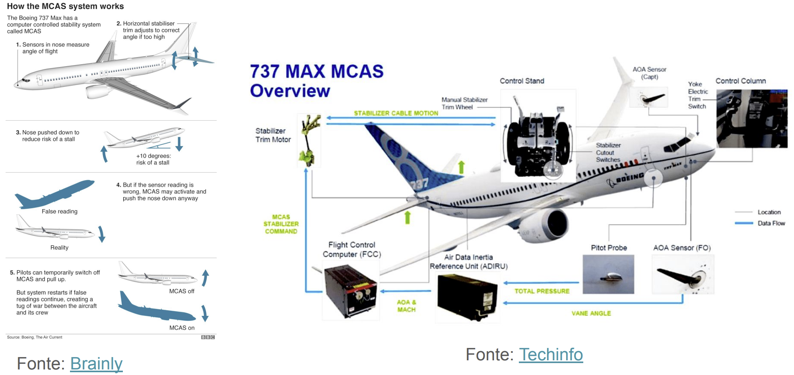
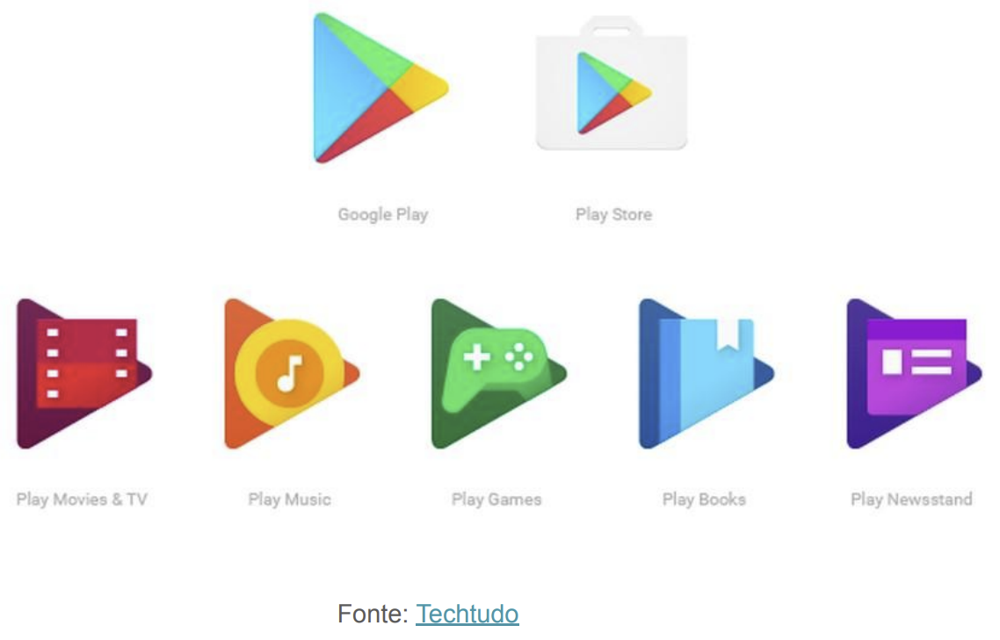
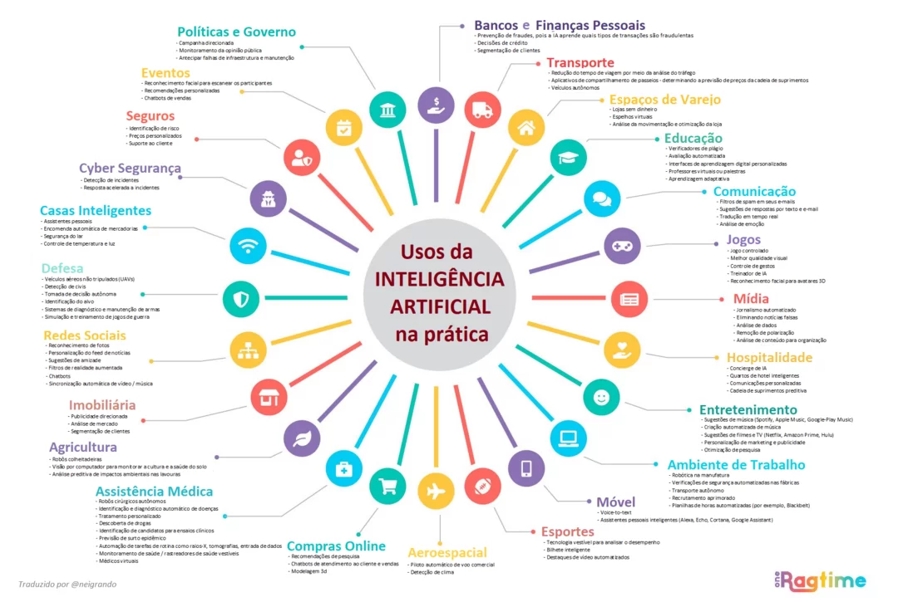
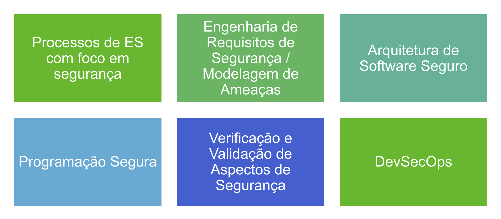
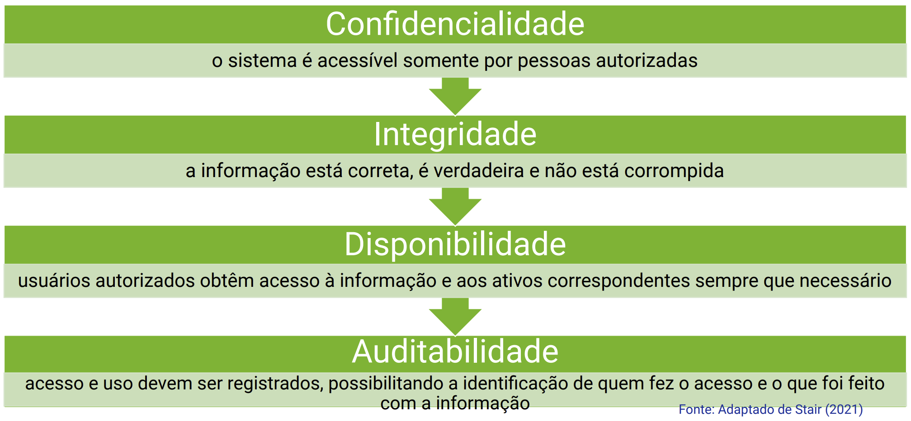
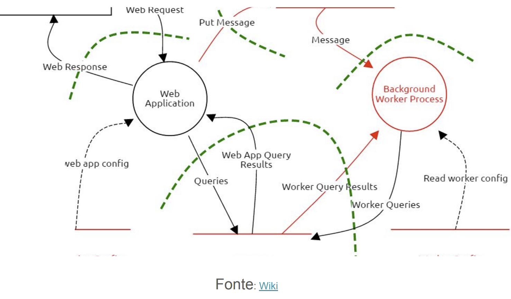
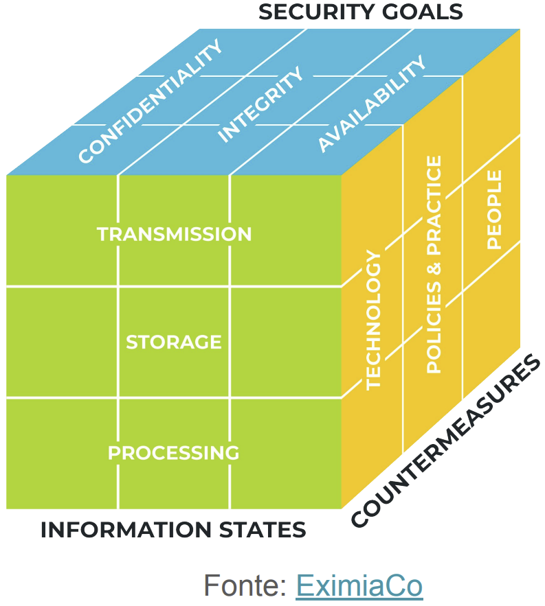
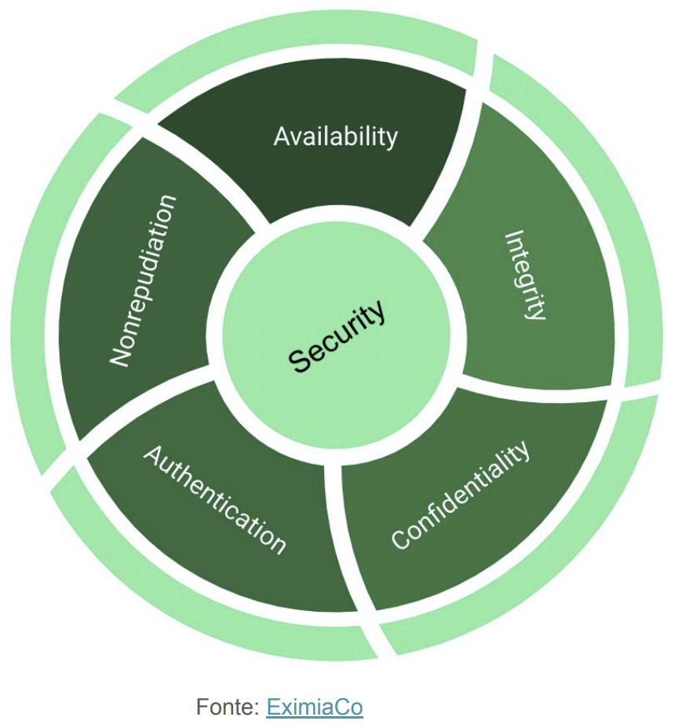

Disciplinas
SISTEMAS DE INFORMAÇÃO Concluído
Materiais
Vídeo 1 - [UFMS Digital] Sistemas de Informação - Módulo 2 - Unidade 2 - Segurança em sistemas de informação sendProf° ministrante: Awdren de Lima Fontão
Antes de tudo…
Vamos falar de alguns exemplos de sistemas complexos que são baseados em software…
Aviação


Segurança?
- Segundo o dicionário:
- segurança
- substantivo feminino
- ação ou efeito de tornar(-se) seguro; estabilidade, firmeza.
- estado, qualidade ou condição de quem ou do que está livre de perigos, incertezas, assegurado de danos e riscos eventuais; situação em que nada há a temer.
E em um SI?
- Expor ao risco de vida;
- Preconceito;
- Apoio à decisões incorretas;
- Injustiça;
- Exposição de dados -> informações...

- É uma causa potencial de um incidente indesejado, que pode resultar em dano para um sistema ou organização (ISO, 2009);
- É um agente externo ao ativo de informação, que se aproveitando de vulnerabilidades, poderá quebrar a confidencialidade, integridade ou disponibilidade da informação suportada ou utilizada por esse ativo.
- É a fragilidade de um ativo ou grupo de ativos que pode ser explorada por uma ou mais ameaças NBR ISO/IEC 27002 (2013);
- Entrada do usuário, dados sensíveis.
- Potenciais prejuízos causados ao negócio por um incidente;
- Prejuízos podem significar perdas financeiras, desgaste da imagem na organização perante o mercado ou perda de recursos/colaboradores.
Os processos devem cobrir…

Limites de confiança
- No que você deve confiar?
- No que você não deve confiar?

Arquitetura segura do sistema
Clarificação de restrições e atributos de qualidade relacionados a sistemas seguros, explicitando prioridades e combatendo subjetividades, envolvendo especialistas;
Garantindo que, de fato, todas as restrições e atributos de qualidade identificados sejam levados em conta na avaliação das propostas de design.

Authentication indicando que devem haver meios claros de assegurar que os usuários são quem afirmam ser antes de terem acesso a dados sensíveis ou confidenciais.
Nonrepudiation, provendo “evidências confiáveis” de que ações sensíveis tenham sido completadas em todos os agentes envolvidos (incluindo, por exemplo, em um sistema cliente/servidor, ambos os lados).
